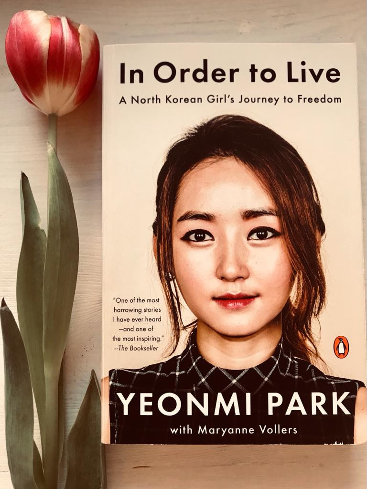

Are you ready to daydream?
The book’s cover is black with a human red face juxtaposing the figure of a black cat. It represents the interconnected lives of the two main characters, a 15-year-old boy who wants to be called Kafka and an old man called Nakata. As a child, Kafka was abandoned by his mother and older sister and left alone in Tokyo with his father, a crazy self-centered artist. One day, in view of a frightening oedipal prophecy made by his father and the terrible relationship with him, he decides to run away. He heads toward Takamatsu, in the south of Japan, accompanied by his alter ego Crow. Nakata is a simple-minded old man who spends his days in Tokyo talking with cats and rescuing lost ones at the request of their beloved owners. After witnessing murders and having committed one himself, he escapes toward the south of Japan. Strange and dreamlike occurrences happen throughout the story: eels falling from the sky, a formless being taking on the appearance of the founder of Kentucky Fried Chicken (KFC) Colonel Sanders, a heavy rock that opens the gate to a new world. The paths of Nakata and Kafka never cross but are connected by the tensions in the series of events.
When I finished reading the book, I had so many open questions in my mind: was miss Saeki, the head of the Komura Memorial Library, Kafka’s mother? Was really Nakata the one who committed the murder? Murakami narrates the series of events surprising the reader page after page, often breaching the line of fantasy and oneiric and without giving many explanations. I have the feeling that I have not always fully understood his many literary references and metaphors, but the book was too engaging to stop and figure them out. I usually do not like fantasy books, but Kafka on the Shore is definitely a must-have in my library.
Siete pronti a sognare ad occhi aperti?
Questo libro si presenta con una copertina nera da cui emerge un profilo rosso umano accostato alla figura di un gatto nero. È la rappresentazione delle vite interconnesse dei due personaggi principali: un ragazzo di 15 anni che vuol essere chiamato Kafka e un anziano di nome Nakata. Kafka fu abbandonato dalla madre e dalla sorella maggiore all’età di quattro anni e si ritrovò a vivere da solo a Tokyo con il padre, un artista matto ed egocentrico. Ha un pessimo rapporto con il padre, il quale, un giorno, gli proferisce una profezia agghiacciante causando la rottura del loro rapporto e la sua fuga. Decide di recarsi verso Takamatsu, nel sud del Giappone, accompagnato dal suo alter ego Corvo. Nakata è un sempliciotto con l’abilità di saper parlare con i gatti. Vive a Tokyo dove passa le sue giornate alla ricerca di gatti smarriti ingaggiato dalle loro famiglie. Si trova coinvolto in un terribile incidente in cui assiste a diversi omicidi e ne commette lui stesso uno. In preda al panico e incapace di processare l’evento, fugge da Tokyo e si dirige verso sud. Eventi surreali si susseguono nella storia: anguille che piovono dal cielo, un essere amorfo che assume le sembianze del fondatore del Kentucky Fried Chicken (KFC) Colonel Sanders, un masso pesantissimo che apre l’ingresso ad un nuovo mondo. I percorsi di Nakata e Kafka non si incroceranno mai, ma sono connessi da una tensione fortissima.
Ho tantissime domande aperte a cui non sono riuscita a trovare una risposta: la signora Saeki, coordinatrice della biblioteca privata di Takamatsu, è sua madre? È stato davvero Nakata ad aver commesso l’omicidio? Murakami racconta gli eventi in maniera rapida e snella, sorprendendo il lettore pagina dopo pagina, spesso rompendo la linea sottile che ci separa dal sogno e dalla fantasia, senza dare spiegazioni sul come e sul perché. Non sono sicura di aver capito tutte le sue allusioni letterarie e metafore, ma il libro mi ha rapita così tanto che non ho voluto fermarmi per comprenderle meglio. I libri di narrativa fantasy non sono il mio genere, ma Kafka sulla Spiaggia è un libro che tutti gli avidi lettori dovrebbero avere nelle loro librerie.

Yeonmi is a North Korean defector and human rights activist who in 2007, at the age of 13, managed to flee to South Korea with her mother.
In this harrowing book, she narrates her long journey to freedom. She shares such an intimate story in an attempt to find her lost sister, who had also escaped North Korea at an earlier time. The first part of the book walks the reader through life in North Korea, giving an overview on local customs, the educational framework, the Songbun (ascribed status) system and how people managed to survive through famines. In the second part of the book, the story evolves very quickly and dives in into their journey to salvation. Along with many other North Korean defectors, they suffer physical and mental abuse, are sold into sexual slavery in China and are forced to hide and lie about their names and past. Notwithstanding the hindrances encountered in China, Yeonmi managed to arrive in South Korea with her mother, reunite with her sister and start a life of freedom.
Prepare a pack of tissues close to you: my heart broke many times throughout the book. I think that all of us should read it to grasp the importance of the great privileges we have in life. Yeonmi and I have the same age and, despite that, she has already lived through experiences that are almost unimaginable to me. It was painful learning her story and, even more painful, thinking that other people are probably going through something similar but without a happy ending. Her testimony is gold.
Work in progress
Who is Siddhartha? What is he looking for?
Most of Hermann Hesse’s protagonists are “suchenden”, people who search and look for spiritual fulfilment. Siddhartha is the son of a wealthy Indian Brahmin and grows up in a privileged environment. He is destined to become a Brahim (the Hindu class of Vedic scholars, priests and teachers) and he masters everything about its doctrine. One day, driven by the curiosity of expanding his spiritual knowledge, he decides to abandon his comfort to wander and seek spiritual peace, the nirvana. On his path, Siddhartha meets different teachers. He first follows the Samanaeans of the forest (seekers, people who perform acts of austerity) for years and becomes one by living deprived of food and clothing. Siddhartha then meets the knowing smile of Gautama, the Buddha, and discusses with him the meaning of studying others’ doctrines. He spends many years at the court of a beautiful lady, where he learns the art of love and experiences earthly human desires. His spirituality keeps evolving, but his sufferings do not end. He is troubled by existential questions and mental pain derived from his experiences. He finally finds what he is looking for by a river, where he learns how to listen to the sacred Om.
I read this book with an almost non-existing knowledge of the Buddhism philosophy and history. I devoured it in only four days and learned so much from each and every chapter. I loved the metaphors and the simplicity of the language through which Hermann Hesse explained profound and complex topics. The book makes you mull over tiny details of your life and, perhaps by osmosis, gives you inner peace.
Work in progress